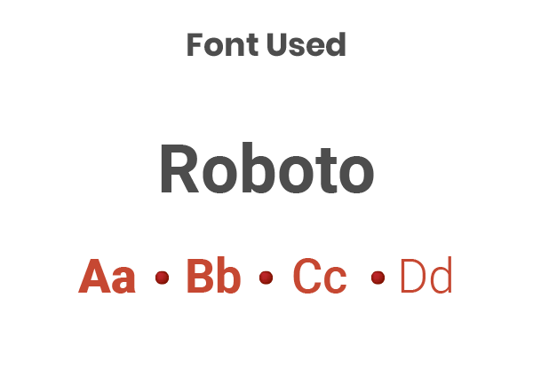
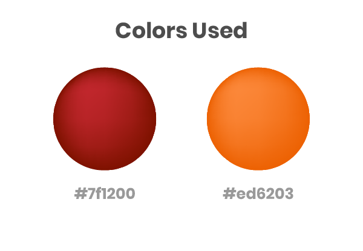
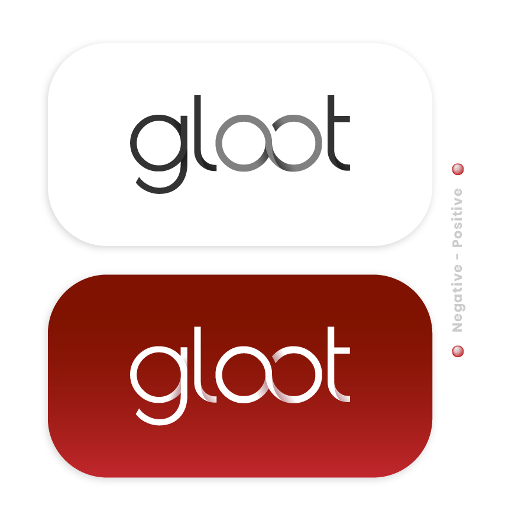
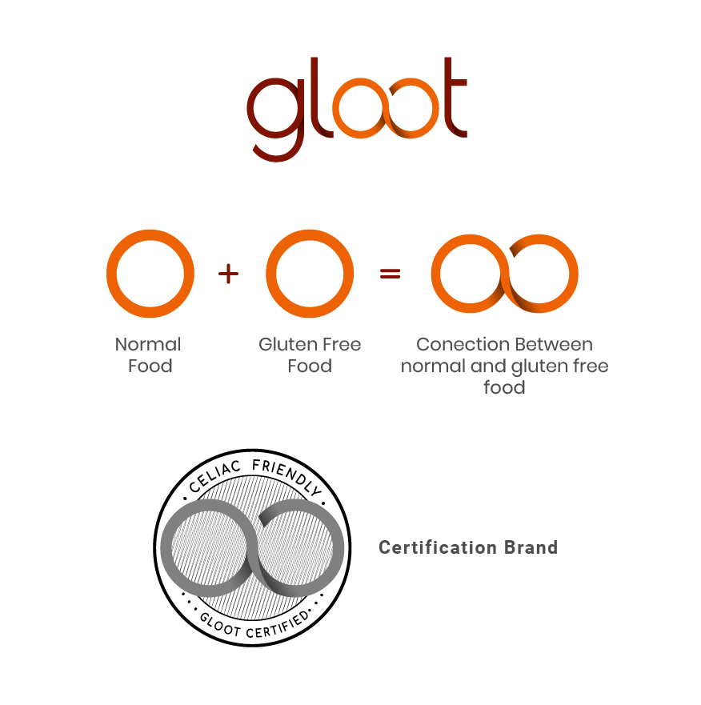
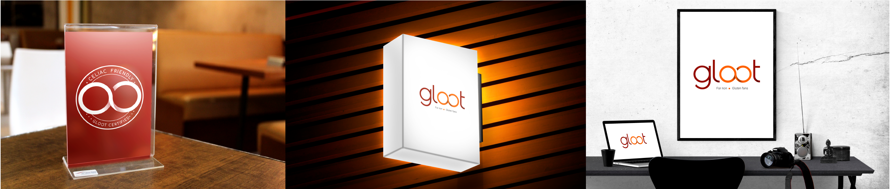

The Challenge.
How food in restaurants can be gluten free, but atractive to other people at the same time?
Investigation Process.
- User Persona
- Stakeholders Map
- Customer Journey Map
- Empathy Map
The Solution.
Gloot was born as a brand that looks to expand in the food industry. This brand certifies and trains throught experts, different restaurants chefs, in order to adapt their food for special diets, mainly people allergic and intolerant to Gluten.
Design Process.




